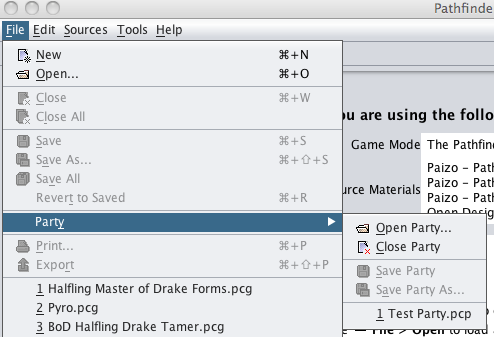
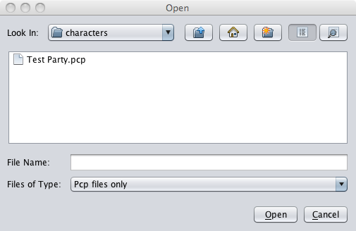
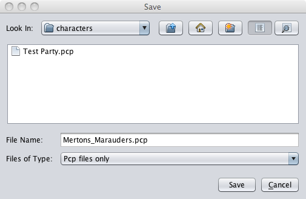

The Party command provides a number of options that make managing groups of PCs easier.

The Party command opens up a new set of options for the user to use.

The Open Party option opens a party file from the last folder PCgen used to save a file in. The Open window will pop up and the user can select the desired Party file and click Open . Party files use the .pcp file extension..
The Close Party option closes the party files, saving and unloading all PCs currently loaded.

The Save Party option allows the user to save all the PCs currently loaded as a "party". The Save window will pop up and prompt the user for the party name. Enter the party name and click the Save button and PCGen will save the party. This in turn allows the user to quickly load all PCs in the party. This is useful for a DM who manages the PCs in his campaign, allowing him to load all PCs in the party with one file name.
The Save Party As option allows the user to save the party under a new filename. This functions much as the Save command does for PCs.
Below the Save Party commands you will find a list of the most recently closed or saved parties. These are included here to allow convenient loading directly from this menu.